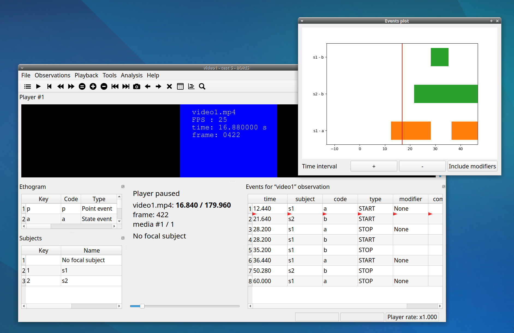
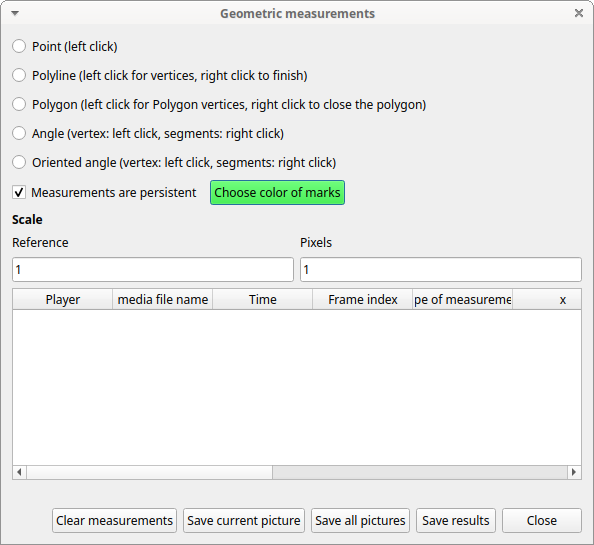
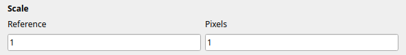
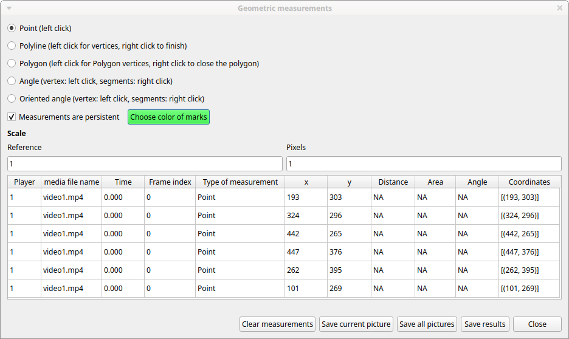
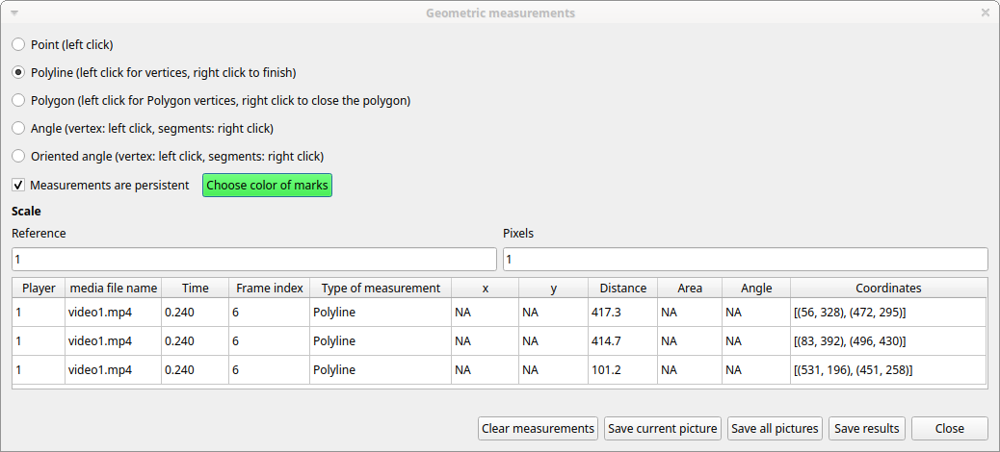
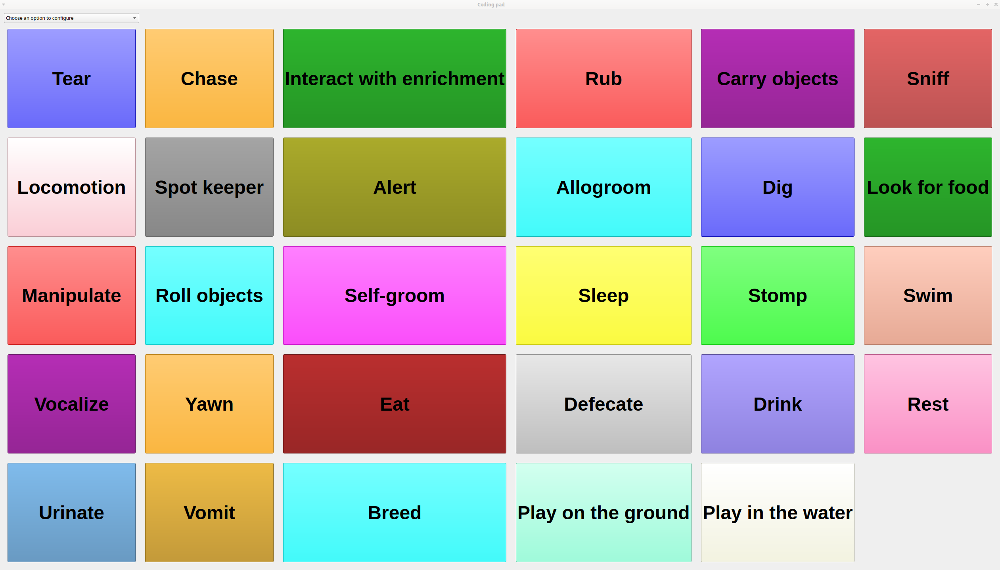
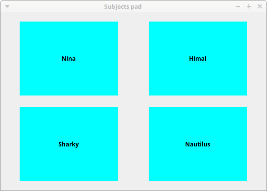
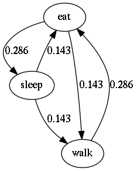
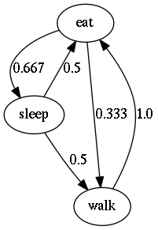

Tools#
Plot events in real-time#
This function can be activated with Tools > Plot event in real time.

Geometric measurements#
Some geometric measurements can be done: distances, areas and angles can be measured and point positions recorded.
Click on Tools > Geometric measurements to activate the measurements.

Mark color#
Use the Choose color of marks button to select a color. All marks will be drawn with the selected color. The color transparency can be set using the Alpha channel vale (0 for 100% transparent, 255 for a solid color).

Setting the scale#
For distance and area measurements you can set a scale in order to have results of measurements in a real unit (like centimeters, meters etc).

-
measure a reference object (that have a known size) on the frame (with the distance tool. See next chapter for details) and set the pixel distance in the Pixel text box.
-
Set the real size of the reference object in the Reference text box (must be a number without unit).
Point#
Select the Point radio button. Click the left mouse button on the video/image to record the position of the clicked pixel.

Distance measurements#
Select the Distance radio button. Click the left mouse button on the frame bitmap to set the start of the segment that will be measured. A circle with a cross will be drawn. Click the right mouse button to set the end. A red circle with a cross will be drawn. The distance between the two selected points will be available in the text area of the Measurements window.

Area measurements#
Select the Area radio button. Click the left mouse button on the frame bitmap to set the area vertices. Circles with a cross will be drawn. Click the right mouse button to close the area. The area of the drawn polygon will be available in the text area of the Measurements window.
Angle measurements#
Select the Angle radio button. Click the left mouse button on the frame bitmap to set the angle vertex. A red circle with a cross will be drawn. Click the right mouse button to set the two segments. Circles with a cross will be drawn. The angle between the two drawn segments will be available in the text area of the Measurements window.
Persistent measurements#
If the Measurements are persistent checkbox is checked the measurement schemes will be available on all frames otherwise they will be deleted between frames.
The marks selected on other frames will be drawn in red.
Coding pad#
During observation a coding pad with the available behaviors can be displayed (Tools > Coding pad). This Coding pad allows the user to code using a touch-screen or by clicking on the buttons. When the Coding pad is displayed you can continue to code using the keyboard or the ethogram.

The button size can be increased or decreased.
The button color can be set for every behavior, for every behavioral category or to no color.
See the drop-down list in the upper-left corner of the Coding pad window.
Subjects pad#
A pad with all defined subjects (or filtered subjects) can be displayed during the observation (Tools > Subjects pad). This Subjects pad allows the user to select the focal subject using a touch-screen or by clicking on the buttons. When the Subjects pad is displayed you can continue to select the focal subject using the keyboard or the subjects list.

Converters for external data values#
Converters can be written using the Python 3 programming language.
The INPUT variable will be loaded with the original value of the external data file (for example 01:22:32).
The OUPUT variable must contain the converted value in seconds (the dot must be used for decimal separator).
Example of a code to convert HH.MM:SS format in seconds:
h, m, s = INPUT.split(':')
OUTPUT = int(h) * 3600 + int(m) * 60 + int(s)
The Python function strptime() from the datetime module can be useful for converting time values: https://docs.python.org/3/library/datetime.html#strftime-strptime-behavior
Example of a code to a date in ISO8601 format in seconds using the strptime() function:
import datetime
epoch = datetime.datetime.utcfromtimestamp(0)
datetime_format = "%Y-%m-%dT%H:%M:%SZ"
OUTPUT = (datetime.datetime.strptime(INPUT, datetime_format) - epoch).total_seconds()
File > Edit project > Converters

Transitions flow diagram#
BORIS can generate DOT scripts and flow diagrams from the transitions matrices (See Observations > Create transition matrix for obtaining the transitions matrices).
DOT script (Graphviz language)#
Tools > Transitions flow diagram > Create transitions DOT script
Choose one ore more transitions matrix files and BORIS will create the relative DOT script file(s).
The DOT script files can then be used with Graphviz (Graph Visualization Software) or WebGraphviz (Graphviz in the Browser) to generate flow diagram of transitions.
See DOT (graph description language) for details.
Flow diagram#
If Graphviz (Graph Visualization Software) is installed on your system (and the dot program available in the path) BORIS can generate flow diagram (PNG format) from a transitions matrix file.
Tools > Transitions flow diagram > Create transitions flow diagram
Choose one ore more transition matrix files and BORIS will create the relative flow diagram.
Flow diagram of frequencies of transitions#

Flow diagram of frequencies of transitions after behavior#

Flow diagram of number of transitions#

Re-encoding and resizing a video file#
BORIS can re-encode and resize your video files in order to reduce the size of the files and have a smooth coding (specially with two video files playing together). The re-encoding and resizing operations are done with the embedded ffmpeg program with high quality parameters (bitrate 2000k).
Select the files you want re-encode and resize and select the horizontal resolution in pixels (the default is 1024). The aspect ratio will be maintained.
You can continue to use BORIS during the re-encoding/resizing operation.
The re-encoded/resized video files are renamed by adding the re-encoded.avi extension to the original files.
Rotating a video file#
BORIS can rotate your video files in order to code them using the right view. The rotating operation is done with the embedded ffmpeg program using the same quality parameters then the original video.
Select the files you want rotate and select the rotation angle between: Rotate 90 clockwise, Rotate 90 counter clockwise and Rotate 180.
The aspect ratio will be maintained.
You can continue to use BORIS during the rotation operation.
The rotated video files are renamed by adding the rotated\<ANGLE> to the original file name.